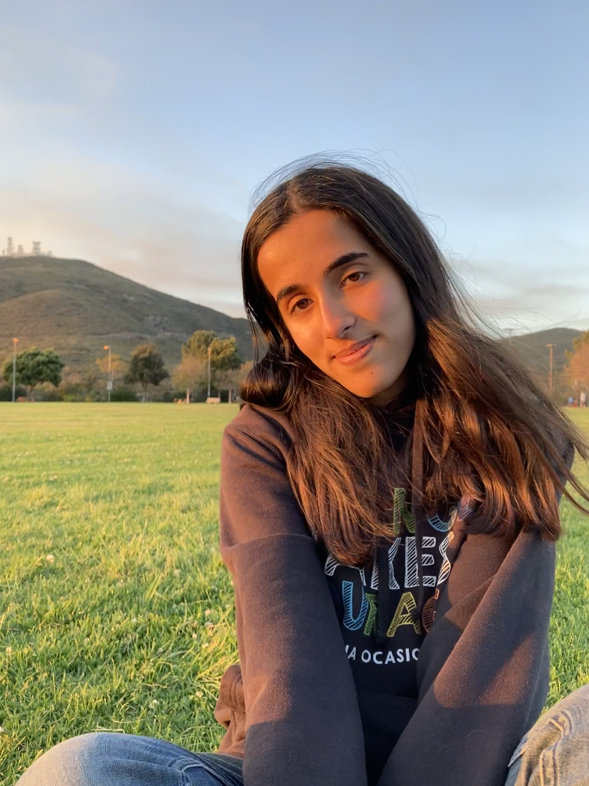

Hi, my name is Zara Khan! I was born and raised in San Diego, California, and I began my college journey at the University of California, Riverside in 2022. I am currently completing my fourth and final year as a biology major. Throughout my time in college, I have developed a strong passion for biology and the ways it connects to improving human health. Because of this interest, I plan to pursue a career in healthcare after graduating with my bachelor's degree. My goal is to become an ICU nurse and work in a fast-paced environment where I can make a meaningful difference in patients' lives. I will be attending nursing school in Fall 2026 to continue working toward this goal.